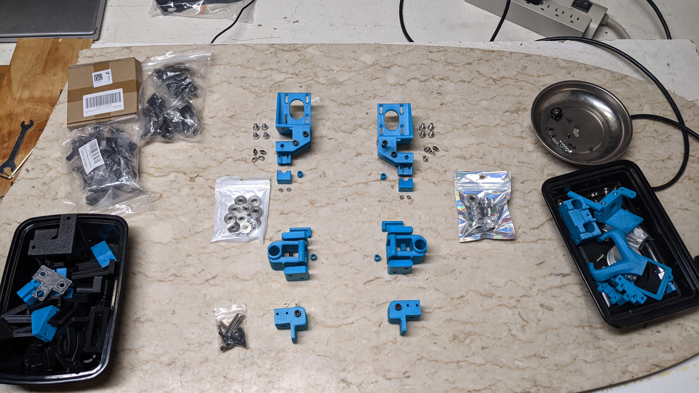

Printing the parts
As previously mentioned, it is recommended to print the BBox parts with ABS or ASA filament. This should be done with an enclosed printer when possible. However it may be possible to print the parts in open air using some brands of ASA if you don't have drafts (or can rig up a simple draft shield).
If you decide not to enclose your BBox then it should be possible to print the parts with PLA. During the early prototype stages of development I made many versions of the parts using PLA and they seemed to be okay. The only area of concern I would have is that the motor mounts will deform when the motors get hot. To prevent that you can dial down the run current so they don't get warm, but that will affect performance and possibly quality. It may be possible to print (just these) parts in PETG for their higher heat tolerance but I've heard that PETG can deform over time due to load/stress. I don't know if that would occur or not.
Profile settings
Generally I like to print fast so I can test out my parts. This led me to using the following printing parameters when I developed the BBox parts. They gave me the strength I needed and also shortened the print times by a little compared to using Voron style print settings. So think of these as minimum settings; you can add more layers/walls or increase the infill, etc.
- 0.2mm layer height
- 0.5mm line width
- 4 walls, 4 top layers, 4 bottom layers
- 15% infill density
- No supports needed
You can also use the Voron style print settings which are similar:
- 0.2mm layer height
- Forced 0.4mm extrusion width
- 4 walls, 5 layers for top, 5 layers for bottom
- 40% infill
- No supports needed
Or you could go the opposite direction and use a 0.25mm layer height for some parts to shorten the print time. Do what makes you happy.
Choosing which STL files to print
You'll need to decide if you'll be using the linear rod or linear rail variant of the BBox. The stl files for both variants can be found in separate folders. So you can ignore the folders that don't apply.
Similarly, you can choose between the axle driven dual-belted Z-drive or the dual leadscrew Z-drive. The parts for these two variants will also be in their respective folders. So only print the parts that apply to your choice.
Later on in this document I'll list out the folder names, the list of .stl files in the folder, and what
the parts are used for. This way you can decide which folder(s) to use and which to ignore as well as the orientation
of the parts when printing.
Note: Some of the
.stlfiles are meant to be printed more than once. These parts will have a suffix in their name likeZBearingClamp_x3.stl. In this example the_x3means you'll need to print 3 copies of this part.
Printed parts used for a BBox235 that uses linear rods for X axis

Build plate pics
The following section shows the print orientation you should use for each part. The arrangement of some of the parts in these build plates were adjusted to make things easier to see and may not be the best arrangement for printing.
The build plates show the .stl parts for a specific folder. The folder name and the list of .stl part files
within it are listed before each build plate.
Folder: XYMotion/MotorAssembly
Always print this. Used by all variants of the BBox
- MotorAssemblyLeft.stl
- MotorAssemblyRight.stl
- MotorAssemblyRodClamp_x2.stl
- PulleySpacer_x2.stl
Folder: XYMotion/FrontIdlers
Always print this. Used by all variants of the BBox. These are the front idlers of the CoreXY motion system.
- FrontIdlerLeftLower.stl
- FrontIdlerLeftUpper.stl
- FrontIdlerRightLower.stl
- FrontIdlerRightUpper.stl
Folder: Toolhead
Always print this. Used by all variants of the BBox. These parts comprise the toolhead.
Folder: XYMotion/XRod/Joiners
These parts should only be printed if you're using the linear rods for x-axis variant. These parts form the section of the gantry that join the X-axis to slide along the Y-axis.
- EndStopBumperLeft.stl
- EndStopBumperRight.stl
- PulleySpacer_x2.stl
- XYJoinerXRodBottomLeft.stl
- XYJoinerXRodBottomRight.stl
- XYJoinerXRodLeft.stl
- XYJoinerXRodRight.stl
- XYJoinerXRodTopLeft.stl
- XYJoinerXRodTopRight.stl
Folder: XYMotion/XRod/Carriage
These parts should only be printed if you're using the linear rods for x-axis variant. These pieces form the X-carriage that the toolhead will attach to.
Folders: XYMotion/XRail/Joiners and XYMotion/XRail/Carriage_Basic
These parts should only be printed if you're using the MGN12C linear rail for x-axis variant.
The parts in XYMotion/XRail/Joiners form the section of the gantry that join the X-axis to slide along the Y-axis.
The parts in XYMotion/XRail/Carriage_Basic form the X-carriage that the toolhead will attach to.
Note: There is also an
XYMoton/XRail/Carriage_DragonBurnerfolder with carriage parts that may work with Voron DragonBurner toolhead. These are still a work in progress and have only been briefly tested.
Folder: ZDrive_Belted/AxleDrive
These parts should only be printed if you're using the dual-belted Z-drive variant.
- AxleBearingSupport_x2.stl
- Z_Motor_Mount.stl
- ZIdlerPulley_x2.stl
Folder: ZDrive_Platform
Always print this. Used by all BBox variants. The corner clamp parts are used to form the T platform while the other parts are used to support the motion of that platform up and down the Z axis. The printer bed will mount onto this T platform.
- CornerClamp_40mm_x2.stl
- ZBearingClamp_x3.stl
- ZRodClampAligned_x6.stl
- ZSwitchMountOneSided.stl
- ZSwitchPlate.stl
Folder: ZDrive_Belted/Clamps
These parts should only be printed if you're building the dual-belted Z-drive variant. These are the parts that clamp the ends of each belt and the mounts that attach the clamp the T platform.
- ClampMountParallel_Heatsets.stl
- ClampMountParallel_SquareNuts.stl
- ClampMountPerpendicular.stl
- SlidingClamp_Parallel.stl
- SlidingClamp_Perpendicular.stl
- StationaryClamp_Parallel.stl
- StationaryClamp_Perpendicular.stl
Folder: ZDrive_LeadScrew
These parts should only be printed if you're building the dual leadscrew variant
- LeadScrewNutMount.stl
- LeadScrewNutMountOffset.stl
- ZMotorMount_x2.stl
Folder: Toolhead - BambuX1_V6.stl only
Always print this part. It is used by all variants of the BBox. This part is used to adapt a clone Bambu Labs X1C hotend to the V6 (J-Head) hotend mount. This is the only part where supports (on build plate only) are recommended. If you print very slow you might not need the supports. You will want to prevent supports from being generated in/around the "block" area of the adapter.
- BambuX1_V6.stl